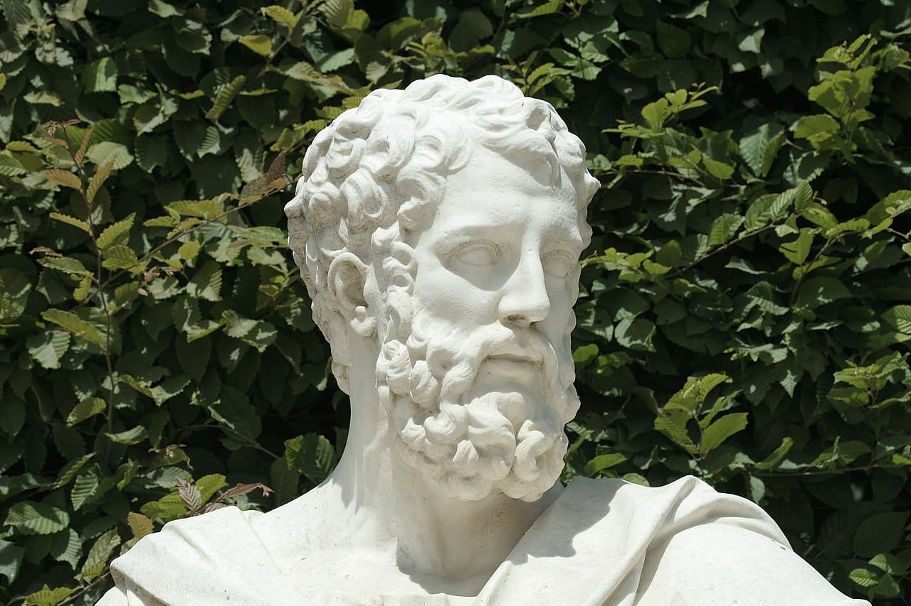

Welcome to the Mathematical World!
Apollonius of Perga (c. 262 BCE – c. 190 BCE)
The Great Geometer and Founder of Conic Sections
Apollonius of Perga was a Greek mathematician renowned for his groundbreaking work in geometry, especially his systematic study of conic sections. Born in Perga (in modern-day Turkey) and educated in Alexandria, the intellectual hub of the ancient world, Apollonius combined rigorous geometric reasoning with astonishing creativity. Because of his achievements, he is often remembered as “The Great Geometer.”

Conic Sections
Apollonius is most famous for his monumental work Conics, where he studied the curves formed when a plane intersects a cone. These curves — circle, ellipse, parabola, and hyperbola — remain fundamental in mathematics, physics, and engineering. They describe planetary orbits, satellite paths, trajectories of projectiles, and principles of optics.
Equations (modern form):
- Circle: \
- Ellipse: \
- Parabola: \
- Hyperbola: \
Although Apollonius lived long before algebraic symbolism, he derived these relationships using geometry and proportions.
Names and Classifications
Apollonius introduced the names parabola, ellipse, and hyperbola, terms still used today. He explained their differences based on how the cutting plane intersects the cone:
- Ellipse: plane cuts the cone at a shallow angle.
- Parabola: plane runs parallel to the side of the cone.
- Hyperbola: plane cuts through both nappes of a double cone.
Astronomy and Planetary Motion
Apollonius’ ideas profoundly influenced astronomy. Many centuries later, Johannes Kepler used ellipses to describe planetary orbits around the Sun — a direct legacy of Apollonius’ geometry. He also studied epicycles and deferents, geometric models later adopted by Ptolemy in the Almagest to explain planetary motion.
Other Contributions
- Tangents and Normals: laid groundwork for differential geometry and calculus.
- Optics: investigated reflection and refraction on curved surfaces, including parabolic mirrors (used in modern telescopes).
- Approximation methods: developed techniques to approximate curves using simpler figures.
Legacy
Apollonius’ Conics originally spanned eight books, of which seven survive (some in Greek, some preserved through Arabic translations). His work was admired by later giants such as Newton, Descartes, and Kepler, who extended his insights to build the foundations of modern physics and astronomy. Apollonius stands as one of the greatest minds of ancient mathematics, rivaled only by Euclid and Archimedes, with a legacy that seamlessly bridges geometry, science, and real-world application.
All rights reserved by the Mathematical Unity
Contact: +8801400044645
Email: mathematicalhorse1453@gmail.com
Our Discord Server: Mathematical Unity [Ulus Riyadiyat]